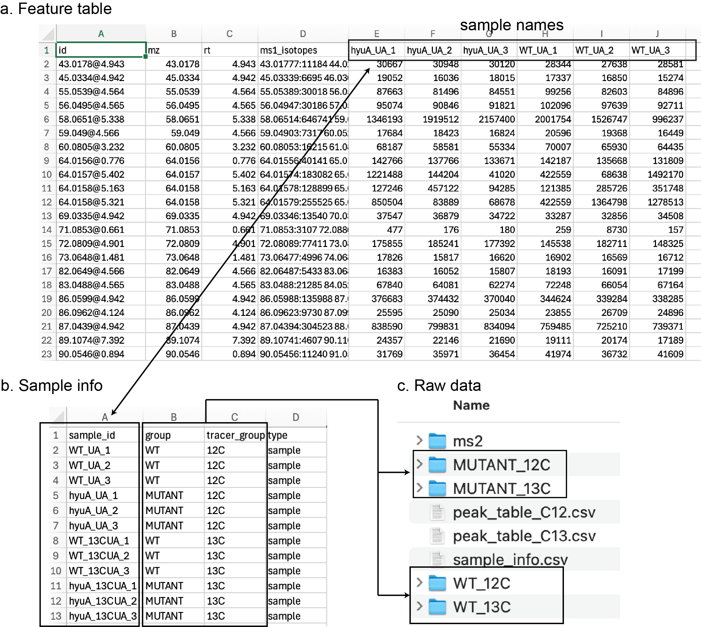
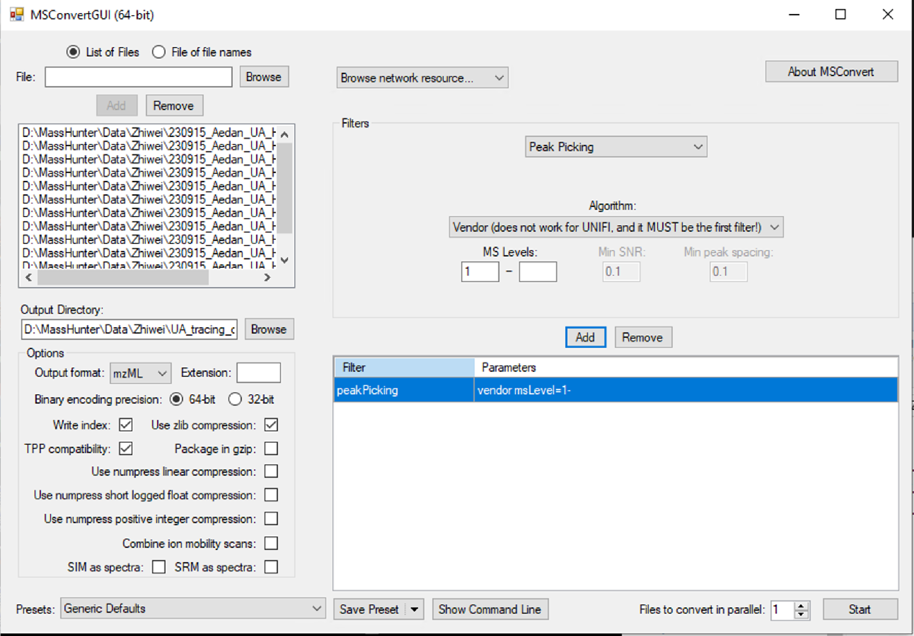
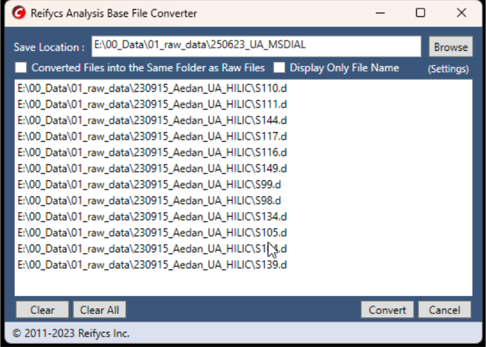
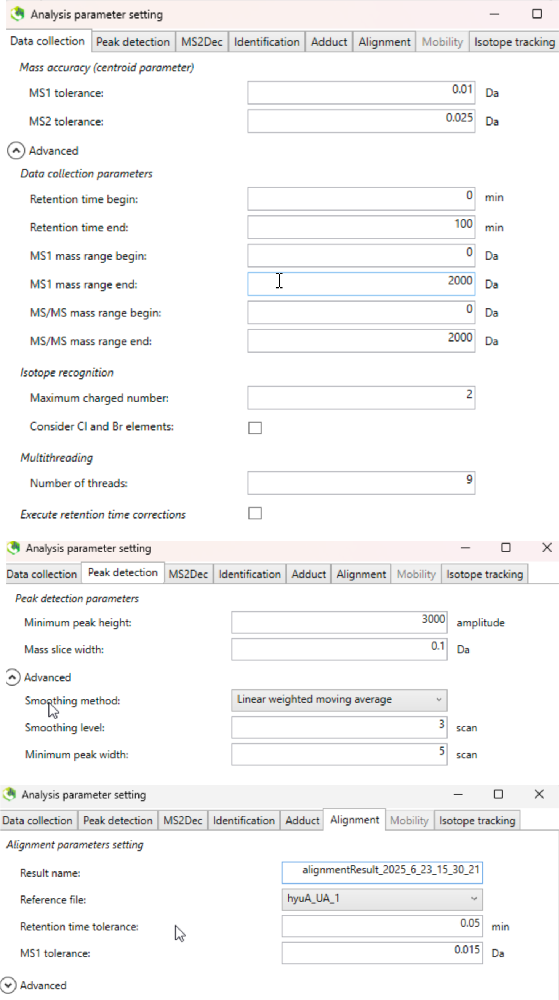
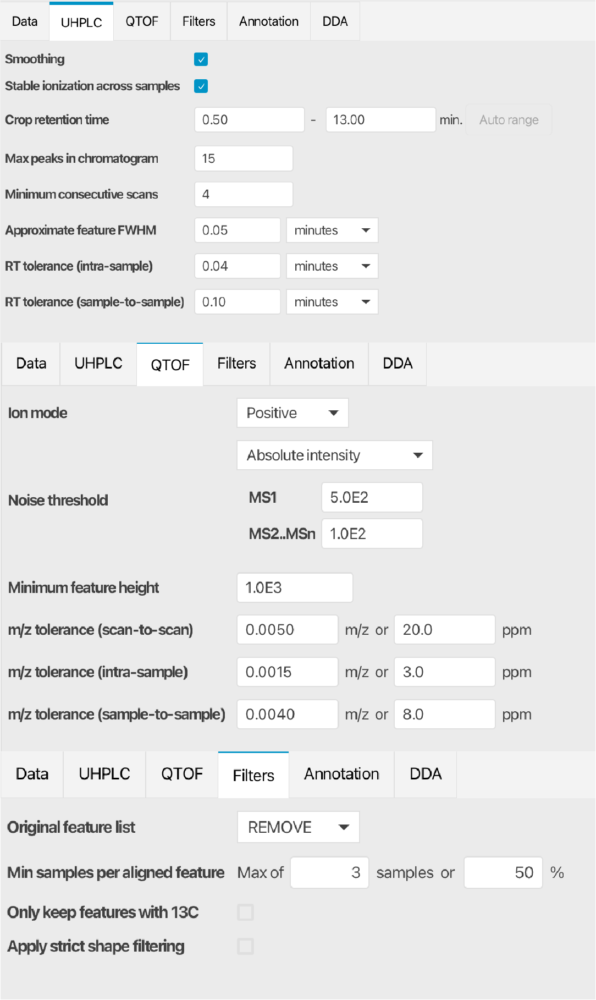
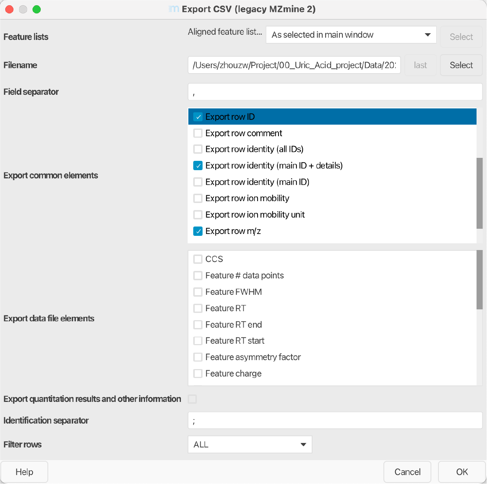

# Load required packages
library(xcms)
library(CAMERA)
# set the working path
setwd('~/Project/00_Uric_Acid_project/Data/20250606_isopairfind_test/Demo_data_xcms/00_raw_data_processing_12C/')
# DoddLabRawMS is a package which utilized xcms to process the raw data
devtools::install_github('DoddLab/DoddLabRawMS', force = TRUE)
# load required packages
library(tidyverse)
library(xcms)
library(CAMERA)
library(DoddLabRawMS)
# run raw data processing - 12C - unlabeled group
# load parameter set
parameter_set <- initialize_raw_parameter_class(column = 'hilic')
process_raw_data(parameter_set = parameter_set,
path = '~/Project/00_Uric_Acid_project/Data/20250606_isopairfind_test/Demo_data_xcms/00_raw_data_processing_12C/')
# run CAMERA to annotate the isotopes
load('~/Project/00_Uric_Acid_project/Data/20250606_isopairfind_test/Demo_data_xcms/00_raw_data_processing_12C/00_raw_data_processing/00_intermediate_data/xset3.RData')
path <- '~/Project/00_Uric_Acid_project/Data/20250606_isopairfind_test/Demo_data_xcms/00_raw_data_processing_12C/'
runCAMERA(xset = xset3,
path = path,
polarity = 'positive',
nSlaves = 6,
pg_sigma = 6,
pg_perfwhm = 0.6,
iso_maxcharge = 2,
iso_maxiso = 4,
iso_ppm = 25,
iso_mzabs = 0.01,
iso_minfrac = 0.5,
is_vali_pg_cor = FALSE,
pg_cor_eic_th = 0.7,
pg_cor_calcIso = FALSE,
gp_cor_calcCis = TRUE,
gp_cor_calcCaS = FALSE,
gp_cor_cor_exp_th = 0.75,
is_use_modified_rule = TRUE,
adduct_ppm = 25,
adduct_mzabs = 0.01)2 Data Preparation
The IsoPairFinder is designed to analyze stable isotope tracing metabolomics data to identify the possible substrate candidates. Such a study design needs: (i) an unlabeled group: mutant vs. wild-type cultures, (ii) a labeled group: mutant vs. wild-type cultures.
For the input of IsoPairFinder, it needs two feature tables (“peak_table_C12.csv” and “peak_table_C13.csv”) for each group, and a table of sample information (“sample_info.csv”). In addition, the raw MS data files (in mzML or mzXML format) are needed and provided in the folders. The demo data can be downloaded here.
Generally, it needs several files (Figure fig-figure2-1):
-
peak_table_C12.csv: the peak area table of the unlabeled group (WT and HyuA mutants fed with uric acid).
- The first 4 columns should be “id”, “mz”, “rt”, “ms1_isotopes”, and other columns are sample names.
-
peak_table_C13.csv: the peak area table of the labeled group (WT and HyuA mutants fed with 13C-uric acid).
- The first 4 columns should be “id”, “mz”, “rt”, “ms1_isotopes”, and other columns are sample names.
-
sample_info.csv: the sample information file in CSV/XLSX format.
- The first 4 columns should be “sample_id”, “group”, “tracer_group”, and “type”.
- The “sample_id” should be consistent with the sample names in the peak table.
- The “group” is the sample group. It only supports 2 groups in the IsoPairFinder version.
- The “tracer_group” is the used tracers; it should be “12C” and “13C”.
- The “type” is the sample type, e.g., “sample”, “qc”, “blank”. Default: “sample”
-
raw data (unlabeled & control group): the folder contains raw data of the unlabeled WT.
- The folder needed to be named as “group_tracer”, e.g., “WT_12C”.
- It supports mzML/mzXML data format.
-
raw data (unlabeled & case group): the folder contains raw data of unlabeled mutation (mzML).
- The folder needed to be named as “group_tracer”, e.g., “hyuA_12C”.
- It supports mzML/mzXML data format.
-
raw data (labeled & control group): the folder contains raw data of labeled WT (mzML).
- The folder needed to be named as “group_tracer”, e.g., “WT_13C”.
- It supports mzML/mzXML data format.
-
raw data (labeled & case group): the folder contains raw data of labeled mutation (mzML).
- The folder needed to be named as “group_tracer”, e.g., “hyuA_13C”.
- It supports mzML/mzXML data format.
- ms2: The folder includes MS/MS files (mzML/mzXML/mgf format)

All input data files can be exported by different metabolomics data processing tools, e.g. xcms1, MS-DIAL2, and MZmine3. Table tbl-table2-1 summarizes the links to demo data, processed data, and tutorials of different tools. We provided step-by-step instructions in the following parts. The raw data files were acquired from the UHPLC-Agilent 6545XT QTOF. The study design could be found in sec-case-study.
2.1 xcms
2.1.1 Step 1: MS1 and MS2 data conversion
The raw data for the demo could be downloaded here. Convert raw MS1 data and MS2 data files to mzML format using ProteoWizard (version 3.0.23010, Link). Please follow the conversion settings (Figure fig-figure2-2).

2.1.2 Step 2. Peak picking using XCMS and isotope merging
The R package xcms (version 3.20.0)1 for peak detection and alignment, and the R package CAMERA (version 1.54.0)4 were used for isotope annotation. Note: The unlabeled group data and the labeled group data were processed separately.
- Unlabeled group data processing. The mzML files are placed in two folders named “WT” and “hyuA_12C” according to their groups. These data were further processed with the following script.
- Labeled group data processing. The mzML files are placed in two folders named “WT” and “hyuA_12C” according to their groups. These data were further processed with the following script.
2.1.3 Step 3. Feature table modification
The xcms exported feature table could be quickly modified using the IsoPairFinder functions modify_xcms_table(). The sample_info table (Figure fig-figure2-1) is needed to define the samples and groups.
# Load required packages
library(IsoPairFinder)
modify_xcms_table(table_xcms = '~/Project/00_Uric_Acid_project/Data/20250606_isopairfind_test/Demo_data_xcms/00_raw_data_processing_12C/00_raw_data_processing/Peak-table.csv',
table_camera = '~/Project/00_Uric_Acid_project/Data/20250606_isopairfind_test/Demo_data_xcms/00_raw_data_processing_12C/00_raw_data_processing/adduct_result_camera.xlsx',
table_sample_info = '~/Project/00_Uric_Acid_project/Data/20250606_isopairfind_test/Demo_data_xcms/sample_info.xlsx',
path = '~/Project/00_Uric_Acid_project/Data/20250606_isopairfind_test/Demo_data_xcms/00_raw_data_processing_12C',
file_output = 'peak_table_C12.csv')2.1.4 Step 4. Organizing files
Please move the modified feature tables, the sample information table, the MS2 data files, and the raw data files to the designated location (Figure fig-figure2-1).
2.2 MS-DIAL
2.2.1 Step 1: MS1 and MS2 data conversion
The raw data for the demo could be downloaded here. Convert raw MS1 data to ABF format using Analysis Base File Converter (version 1.3.8802, Figure fig-figure2-3).

Convert MS2 data files to mzML format using ProteoWizard (version 3.0.23010, Link). The parameters could be found in Figure fig-figure2-2.
2.2.2 Step 2. Peak picking using MS-DIAL
The MS-DIAL (ver.4.9.221218) was used here. Select the appropriate parameters according to the experimental design (parameters used in the demo data are shown in Figure fig-figure2-4). Export the feature table containing “Raw data matrix (Area)”. Note: The unlabeled group data and the labeled group data were processed separately.

2.2.3 Step 3. Feature table modification
The MS-DIAL exported feature table could be quickly modified using the IsoPairFinder functions modify_msdial_table(). The sample_info table (Figure fig-figure2-1) is needed to define the samples and groups.
library(IsoPairFinder)
table_msdial <- '~/Project/00_Uric_Acid_project/Data/20250606_isopairfind_test/Demo_data_msdial/hyuA_UA_48h_area.txt'
table_sample_info <- '~/Project/00_Uric_Acid_project/Data/20250606_isopairfind_test/Demo_data_msdial/sample_info.xlsx'
modify_msdial_table(table_msdial = table_msdial,
table_sample_info = table_sample_info,
path = '~/Project/00_Uric_Acid_project/Data/20250606_isopairfind_test/Demo_data_msdial',
file_output = 'peak_table_C12.csv')2.2.4 Step 4. Organizing files
Please move the modified feature tables, the sample information table, the MS2 data files, and the raw data files to the designated location (Figure fig-figure2-1).
2.3 MZmine
2.3.1 Step 1: MS1 and MS2 data conversion
The raw data for the demo could be downloaded here. Convert raw MS1 data and MS2 data files to mzML format using ProteoWizard (version 3.0.23010, Link; See sec-xcms-conversion).
2.3.2 Step 2. Peak picking using MZmine
The MZmine (version 4.7.3) was used here. Import and load the default parameters (the “UHPLC-QTOF” was used here). The modified parameters used in the demo data are shown in Figure fig-figure2-5. Note: The unlabeled group data and the labeled group data were processed separately.

Export the feature table using MZmine:
Feature list methods → Export feature list → Export CSV legacy MZmine2 (see Figure fig-figure2-6).

2.3.3 Step 3. Feature table modification
The exported feature table can be quickly modified using the IsoPairFinder function modify_mzmine_table(). The sample_info table (Figure fig-figure2-1) is needed to define the samples and groups.
# Load required packages
library(IsoPairFinder)
table_mzmine <- '~/Project/00_Uric_Acid_project/Data/20250606_isopairfind_test/Demo_data_mzmine/mzmine_12C.csv'
table_sample_info <- '~/Project/00_Uric_Acid_project/Data/20250606_isopairfind_test/Demo_data_mzmine/sample_info.xlsx'
modify_mzmine_table(table_mzmine = table_mzmine,
table_sample_info = table_sample_info,
path = '~/Project/00_Uric_Acid_project/Data/20250606_isopairfind_test/Demo_data_mzmine',
file_output = 'peak_table_C12.csv')2.3.4 Step 4. Organizing files
Please move the modified feature tables, the sample information table, the MS2 data files, and the raw data files to the designated location (Figure fig-figure2-1).
1.
Smith, C. A., Want, E. J., O’Maille, G., Abagyan, R. & Siuzdak, G. XCMS: Processing Mass Spectrometry Data for Metabolite Profiling Using Nonlinear Peak Alignment, Matching, and Identification. Analytical Chemistry 78, 779–787 (2006).
2.
Tsugawa, H. et al. A lipidome atlas in MS-DIAL 4. Nature Biotechnology 38, 1159–1163 (2020).
3.
Schmid, R. et al. Integrative analysis of multimodal mass spectrometry data in MZmine 3. Nature Biotechnology 41, 447–449 (2023).
4.
Kuhl, C., Tautenhahn, R., Böttcher, C., Larson, T. R. & Neumann, S. CAMERA: An Integrated Strategy for Compound Spectra Extraction and Annotation of Liquid Chromatography/Mass Spectrometry Data Sets. Analytical Chemistry 84, 283–289 (2012).